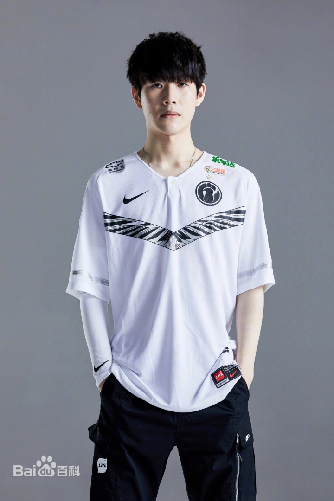

职业生涯概述
TheShy 于2015年加入中国的 Invictus Gaming（IG）战队，凭借其强大的上单表现，在2018年获得了英雄联盟全球总决赛冠军。他在上单位置的多样化英雄池和强大的对线能力让他成为了世界顶级选手。
重要历程
- 2014年：加入WE战队。
- 2015年：加入 Invictus Gaming 战队。
- 2018年：代表 IG 战队赢得全球总决赛冠军。
- 2019年：代表 IG 战队获得全球总决赛四强。
- 2020年：继续保持顶尖状态，多次夺得 LPL 联赛冠军。
- 2023年：代表 WBG 战队获得全球总决赛亚军。
- 2024年：TheShy 休息一年。
职业生涯
韩服第一锐雯
2014年，在韩服高分段小有名气的姜承錄曾经短暂加入过韩国OGN次级联赛队伍Anarchy战队，这支队伍就是AFs战队被收购之前的前身。但因为没能上场比赛，他在年末选择远赴中国，加入LPL的WE战队。不过根据LPL官方规定，1999年出生的姜承錄由于年龄不够，依旧不能代表WE出征职业联赛，无奈之下，他只能作为战队青训选手，以直播为业。初登赛场
2015年3月，WE战队将姜承錄租借至韩国次级联赛队伍Awe Max战队参加2015韩国挑战者联赛春季赛，这是姜承錄作为英雄联盟职业选手的出道首秀，但受困于实力有限，Awe Max战队最终止步16强。在这之后一直到2017年，姜承錄都处于无赛可打的状态。梦的开始
2017年5月，iG战队用辅助选手Ben（南东现）与WE战队交易换来姜承錄。虽然刚开始只是Duke（李浩成）的替补，但姜承錄还是得到了不少的出场机会。6月，德玛西亚杯长沙站，在对阵IM战队的比赛中，姜承錄获得在iG战队的首秀机会，不过iG战队最终输掉比赛。2017LPL夏季赛，iG战队以A组第三挺进了季后赛，在淘汰赛中不敌IM战队。在季军战中，iG战队战胜WE战队拿到季军。随后在S7选拔赛上，iG战队以2-3不敌WE战队，失去了参加全球总决赛的机会。最后一块拼图
2018LPL春季赛，随着队内天才ADC选手Jackeylove的年龄达到参赛标准，“完全体”的iG在揭幕战失利后，在常规赛中豪取18连胜，并最终以东部第一的战绩进入季后赛。然而在季后赛中，姜承錄因手部受伤无法参加季后赛，iG战队先以2-3不敌RNG战队，再以1-3不敌RW战队，最终仅排名第四。2018亚洲对抗赛，在小组赛中，iG战队战胜了LMS赛区的M17战队和LCK赛区SKT战队，帮助LPL赛区成功晋级决赛。在决赛中，iG战队败于LCK赛区的KT战队，但LPL赛区仍然以3-2战胜了LCK赛区获得了冠军。2018LPL夏季赛，iG战队以东部第一的战绩进入季后赛。在季后赛中，iG战队以3-2战胜JDG战队进入决赛，根据积分规则iG战队已经晋级全球总决赛。在决赛中，iG战队以2-3不敌RNG战队获得亚军。2018英雄联盟全球总决赛，iG战队以5胜2负小组第二的战绩晋级淘汰赛。在八强赛中，iG战队以3-2战胜KT战队。在半决赛中，iG战队以3-0战胜G2战队。在决赛中，iG战队以3-0战胜FNC战队获得了冠军，这是LPL赛区在S赛上获得的首个冠军。2018年12月1日，LOL颁奖礼，姜承錄获得年度最受欢迎选手。巅峰与失败
2019年4月21日，iG战队以3-0战胜JDG战队，获得了2019LPL春季赛冠军，姜承錄获得总决赛MVP。5月17日，msi季中邀请赛淘汰赛，iG战队以1-3不敌TL战队，无缘决赛。2019英雄联盟全球总决赛，iG战队以4胜2负小组第二的战绩晋级淘汰赛。在八强赛中，iG战队以3-1战胜GRF战队。在半决赛中，iG战队以1-3不敌冠军FPX战队，无缘决赛。11月20日，姜承錄获得了2019年度最受欢迎选手，这也是他连续第二年获得年度最受欢迎选手奖。

下山
2020年4月29日，姜承錄随iG战队获得2020LPL春季赛殿军。11月27日，被评为2020年度最佳上单。11月30日，获得2020LPL全明星周末最受欢迎选手。新的开始
2021年12月14日，微博电子竞技俱乐部英雄联盟分部官方微博官宣人员变动消息，姜承錄正式加入队伍。竭尽所能
2022年，春季赛，TheShy 虽然个人表现依然亮眼，但也无法独自带领队伍走出困境。在季后赛中，WBG 战队遗憾地止步于八强，未能实现预期的目标。夏季赛，TheShy的表现可圈可点，他用自己的实力证明了作为一名顶级上单的的价值,但是再强的个人实力也抵不住队友的拉跨，最终遗憾没能进入世界赛。重登来时路，可否在少年
2023年1月6日，随WBG获得2022首届英雄联盟微博杯总冠军。 1月10日，WBG官方公布了春季赛的大名单，姜承錄在列。5月27日，入选WBG俱乐部LPL夏季赛阵容大名单。在夏季赛冒泡赛中，连续3：2击败TES，3：1击败EDG，成功夺得LPL四号种子，时隔四年，再进世界赛。那有什么四年，我只记得1430天。11月11日，在TheShy 24岁的生日， WBG 3：2 成功击败 BLG，时隔1831天，TheShy再次进入全球总决赛。Bin,这一次，我要把你打回现实。————TheShy
11月19日，2023英雄联盟全球总决赛冠亚军决赛，TheShy发挥不佳，随WBG战队0-3不敌T1战队，获得亚军。春凤若有怜花意，可否许我再少年。
12月11日，姜承錄与俱乐部合约期满，即日起成为自由人。他将选择休息一段时间，缺席2024年比赛。再出发
2024年休息了一年，2025年，TheShy回归，再次回到了IG，一切从头。希望今后的路，TheShy能够开心地走下去。